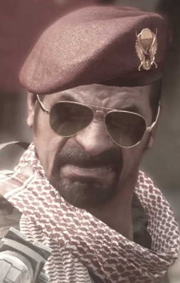

Personajes
 |
El capitan John Price, un militar reconocido por no saber dejar solo a un compañero,
y ser vengativo con aquellos que se atreven a destruir su mundo.
En Call of Duty 4: Modern Warfare se revela a Price como un joven teniente el cúal participó en una misión
de asesinato contra Imran Zakhaev. Junto al Capitan McMilan , Price llegó a Prípiat(Chernobyl),
donde Zakhaev se disponía a realizar un intercambio de armas.
Si bien Zakhaev fue alcanzado por Price, no consiguieron eliminarlo.
|
 |
John MacTavish o tambien llamado "Soap" pelea en primera línea contra los ultranacionalistas como parte de la SAS (Special Air Service),
es un cuerpo de ejército de fuerzas especiales del Ejército Britanico.
Bajo el mando del capitán Price, van en busca de los ultranacionalistas. MacTavish forma parte de la task force 141.
Mas tarde el comandante Sheperd traicionar a esta unidad,
Soap y Price van busca de venganza, Soap termina grvemente herido, despues de una larga recuperación, Soap vuelve al campo de batalla.
Soap fallece debido a una gran perdida de sangre, durante una operación para asesinar a Vladimir Makarov.
|
|
Simon Ridley(Ghost), tuvo una infancia muy traumática mientras crecía en Manchester, Inglaterra debido a su despiadado padre.
La mayoría de los días, su padre traía animales peligrosos y se burlaba de ellos,
incluso yendo tan lejos para obligarlo a besar a una serpiente o amenazarlo con matarlo.
Cuando él y su hermano menor Tommy Riley crecían, Tommy siempre usaba una máscara de calavera por la noche para asustar a Simon.
Despues del ataque el 11 de septiembre, Simon decidio formar parte del ejercito. Era un soldado experto que logró formar parte de la SAS(Special Air Services).
Fue enterrado vivo junto a cadaveres, logrando escapar y con 4 meses recuperación quizó volver al ejercito, pero ya no lo aceptaron.
Una noche se reunió con sus ex colegas, estos le traicionaron intentando llevarselo para matarlo, Simon logró escapar, pero al volver a casa se encontró con una escena horrible,
toda su familia asesinada. Simon tomo venganza contra los asesinos de su familia, usando una mascara de calavera, despues de tomar venganza, el general Sheperd
lo reclutó para unirse a la Task Force 141 bajo el nombre clave de "Ghost".
|
|
Gaz nació en 1969, en Reino Unido. Se le ve generalmente armado con un G36C , pero en la misión Tripulación Prescindible dice que le gusta la escopeta W1200 a la hora de combates a corta distancia.
Durante un escape en autopista, la SAS es atacada fuertemente por los ultranacionalistas, finalmente los acorralan. Zakhaev remata de un tiro en la cabeza a Gaz.
Otra de las características que definen a Gaz es que habla mucho en las misiones, aunque es el segundo al mando del pelotón de Price y parece que ambos combatieron en Beirut,
haciendo referencia a ello cuando encuentran a Kamarov por primera vez.
|
|
Nikolai fue un sargento mayor de las Fuerzas Armadas Soviéticas en una unidad anti-tanque.
Es un veterano de la guerra Soviética.
|
|  |
Como parte de los llamados "Cuatro Jinetes", Khaled Al-Asad fué responsable de la muerte del presidente Al-Fulani,
que fue acusado de apoyar a los países de Occidente por su propio interés.
Al-Fulani fué capturado por las tropas de Al-Asad y transportada en un coche a la arena, donde fué ejecutado por el mismo Asad, en cadena nacional de trasmisión televisiva.
Al-Asad asume el control del país, pero con la vista de los Estados Unidos, debido a que pone en peligro la política de todo el Medio Oriente.
|
|
Zakhaev nació de un padre y una madre desconocidos durante el reinado de la Unión Soviética. Creía en los ideales y objetivos de la Unión Soviética.
Esta creencias es lo que lo impulsaría en sus objetivos en sus últimos años del partido Ultranacionalistas.
Iniciando su servicio militar hasta llegar en los Spetsnaz.
En 1996, quince años antes de la Segunda Guerra Civil Rusa, Zakhaev fue testigo del colapso del régimen comunista en la Unión Soviética como una oportunidad para salvar las barras de combustible radiactivo de la central nuclear de Chernobyl en Pripyat, Ucrania,
y vender el precioso uranio como nuclear siendo material para su mercado negro. A través de las ganancias que obtuvo de estos tratos, Zakhaev planeó financiar su propia facción militar extremista que recuperaría el control de Rusia y restablecería su régimen de la era soviética.
|
|
En 1996, quince años antes de la Segunda Guerra Civil Rusa, Zakhaev fue testigo del colapso del régimen comunista en la Unión Soviética como una oportunidad para salvar las barras de combustible radiactivo de la central nuclear de Chernobyl en Pripyat, Ucrania, y vender el precioso uranio como nuclear siendo material para su mercado negro.
A través de las ganancias que obtuvo de estos tratos, Zakhaev planeó financiar su propia facción militar extremista que recuperaría el control de Rusia y restablecería su régimen de la era soviética.
|
|
Shepherd nació a finales de 1970. En el año 2011, Shepherd comandó a 30.000 marines en la misión de capturar a Khaled Al-Asad en Medio Oriente, pero todos mueren en una explosión nuclear causada por Imran Zakhaev bajo órdenes de Vladimir Makarov.
La muerte de estos soldados hace que Shepherd tome una campaña con el objetivo de "castigar" a Estados Unidos y a la OTAN por hacer caso omiso a lo que sucedió en Oriente Medio, echarle la culpa a Makarov, eliminarlo junto a los ultranacionalistas y recuperar la imagen de los Estados Unidos como la potencia militar más poderosa del mundo. Entre 2011 y 2016
Para poder llevar a cabo su plan, Shepherd necesitaba encontrar a Makarov y eliminarlo. Para eso, formó la Fuerza Operativa 141, la cual participó fallidamente en la Operación Kingfish en 2013 para capturar a Makarov, haciendo desaparecer a Price por un tiempo, hasta los sucesos de Call of Duty: Modern Warfare 2.
Para poder encontrar a Makarov, Shepherd necesitaba el apoyo y soporte del gobierno y el ejército ruso, por lo que decide iniciar una guerra de manera encubierta para demostrarles su poder y utilidad.
|
|
Según la inteligencia reunida por el general Shepherd, Vladimir Makarov se graduó de la Academia Militar de Frunze como Capitán en el Ejército Ruso al servir como paracaidista en la 98.ª División Aerotransportada de la Guardia del VDV. A principios de los noventa, estuvo estacionado en Berlín durante el colapso del Muro de Berlín. Más tarde en su carrera, llegó al Spetsnaz y sirvió dos giras en Chechenia durante la Primera Guerra Chechena. Se creía que una compañía bajo su mando estaba involucrada en algunas de las redadas más brutales de "limpieza".
En algún momento, la ONU realizó una investigación para investigar estos cargos de violaciones de derechos humanos.Aparece el nombre de Makarov apareció en la parte superior de la lista presentada por un panel de investigación de la UE, pero la investigación se abandonó cuando Makarov optó por el alta de las fuerzas armadas. Este incidente marcaría el comienzo de su odio patológico y celos hacia Occidente y el gobierno ruso por no darle otra opción que abandonar las fuerzas armadas. Posteriormente, Makarov llevó su entrenamiento militar pasado a muchas empresas criminales y terroristas, como el tráfico de personas, el lavado de dinero, los bombardeos de objetivos militares / civiles y asesinatos. En algún momento, el líder del floreciente Partido Ultranacionalista de Imran Zakhaev, se dio cuenta y le permitió a Makarov una posición dentro de su movimiento antioccidental. Se dijo que Makarov fue "controlado" por Zakhaev durante esta asociación de anti-occidental.
|
|
Foley aparece por primera vez en Otro día, la misma Mierda, enseñando a los novatos a disparar con la mira con la ayuda del Soldado Allen. Luego, se retira de la base para combatir a fuerzas hostiles. En una ciudad cercana, los Rangers entablan combate y finalmente retoman el control de la zona. Posteriormente Allen es reasignado y reemplazado por el Soldado James Ramirez. Los Rangers son reasingnados a Virginia después de la invasión rusa. En una zona comercial, Hunter Dos-Uno rescata al HVI Raptor y luego se retiran a Arcadia para rescatar civiles. Despues, Hunter Dos-Uno se retira a Washington D.C. para retomar el control de la ciudad. La unidad le da tiempo a los equipos de evacuación pero su helicoptero es derribado por un SAM. Varios sobreviven y comienzan a luchar con los atacantes. En alta desventaja, Dunn es herido pero es salvado por Foley. Entonces, la carga electromagnetica causada por la explosion del misil lanzado por el Capitan Price que hace que Sat1 muera, explota en la Atmosfera y Foley y su unidad casi son aplastados pero logran cubrirse. Luego, reciben el aviso de reunirse con el coronel Marshall en el Whiskey Hotel. Tras eliminar varios enemigos, la unidad llega al Whiskey Hotel, donde se esta llevando a cabo un inmenso tiroteo por el control de la zona. En un intento de recuperar el edificio, Hunter Dos-Uno entra a la Casa Blanca a eliminar a los enemigos pero reciben el aviso de que si no despleguaban bengalas en el tejado la ciudad entera seria destruida. Con el tiempo apresurandolos, los Rangers corren a lo alto de la Casa Blanca. Finalmente, logran llegar y encienden sus bengalas, cancelando el bombardeo. Luego, Foley y Dunn empiezan a hablar de una invasión a Moscú.
|
|
James Ramírez es un soldado del 75 regimiento de los Rangers del Ejército de Estados Unidos destinado a Washington D.C. Es el reemplazo de Joseph Allen en Hunter Dos-Uno, debido a que su predecesor Joseph Allen fue movido a la CIA y asesinado en una misión como encubierto.
|
|
El sargento Gary "Roach" Sanderson es el personaje jugable principal en Call of Duty: Modern Warfare 2 y Call of Duty: Modern Warfare 2 Remastered. Él era un miembro de las fuerzas especiales británicas y de la Fuerza Operativa 141 multinacional, bajo el mando del Capitán John "Soap" MacTavish y operando detrás de la escena durante la Tercera Guerra Mundial.
|
|
No se sabía mucho sobre Yuri hasta las revelaciones en Praga. Se sabía que Yuri sirvió en el Spetsnaz y fue (como se describió a sí mismo en ese momento) "joven y patriótico" durante la década de 1990. Su idealismo llamó la atención de Imran Zakhaev y Vladimir Makarov, y finalmente se hizo amigo de él. Yuri sirvió en el Partido Ultranacionalista escoltando principalmente a Makarov durante la crisis.Makarov despertando a Yuri
En 1996, Yuri y Makarov están en uno de los vehículos durante el intento de intercambio de armas de Zakhaev en Pripyat, Ucrania. Después del intento de asesinato del teniente John Price junto con MacMillan en Zakhaev, Yuri y Makarov ayudaron a escoltar a Zakhaev después de que su brazo izquierdo fuera aputacion. 15 años después, durante el golpe de estado de Khaled Al-Asad en el Medio Oriente, Yuri estaba de pie junto a Makarov cuando detonó el dispositivo nuclear por orden de Al-Asad para nivelar la ciudad, matando a treinta mil marines estadounidenses. Sin embargo, los eventos que experimentó Yuri lo inquietaron por su afiliación con los ultranacionalistas.
|
|
Sandman sirvió en el Ejército de Estados Unidos bajo la Delta Force, comandando al Equipo Metal contra Makarov. Dirigió operaciones en Nueva York, Hamburgo, París, Berlín y Siberia.
|
|
Derek "Frost" Westbrook es un miembro de la Delta Force , asignado al Equipo Metal y es el co-personaje principal junto con Yuri y uno de los personajes jugables en Call of Duty: Modern Warfare 3 en las misiones de dicha fuerza. Es unos pocos de los personajes jugables en los que no se puede presenciar su rostro ni su voz, no obstante, en una de las misiones se puede apreciar su voz. Nació en Atlanta, Georgia, EE.UU y tiene 32 años.
|
Armas Principales
|
Fiable fusil de asalto automático con munición soviética de 7,62 mm. La munición de gran calibre requiere mucha habilidad para controlar el retroceso. |
|
Fusil de combate automático para todo uso. Si controlas los disparos, puede ser muy eficaz a grandes distancias. |
 |
Arma modular totalmente automática configurada para aumentar la movilidad en los combates a corta distancia. |
|
Fusil de combate semiautomático con una alta cadencia de disparo que permite efectuar más disparos consecutivos. |
|
Fusil de combate de tipo bullpup de ráfagas de tres disparos. Estas pueden ser letales a distancias intermedias. |
|
Fusil de asalto automático con un diseño ergonómico que facilita el manejo y una cadencia de disparo constante que ayuda a mantener la puntería. |
|
Subfusil automático con munición de calibre 9 mm. El equilibrio perfecto entre estabilidad, movilidad y letalidad. |
|
Subfusil automático con sistema de cerrojo. Simple estable y efectivo. |
|
Subfusil automático de tipo bullpup. Incorpora un cargador en la parte superior con munición 5,7 x 28 mm de gran velocidad. |
|
Fusil de asalto automático con un sistema de pistón de recorrido corto que mantiene una cadencia de disparo elevada y un bajo retroceso. |
|
Fusil de asalto automático de gran calibre con un daño elevado a gran distancia. |
|
Subfusil automático bien equilibrado provisto de un cargador helicoidal de gran capacidad. |
Historia
En el año 2011 estalla una guerra civil rusa entre su gobierno y los ultranacionalistas quienes buscan restaurar Rusia a su glamour de la era soviética. Las fuerzas britanicas se estaban fijando en los movimientos de Al-Asad, por lo que envió a un equipo conocido como la SAS(Special Air Services), justo en ese momento ingresaba un novato conocido como Soap MacTavish, bajo el mando del capitan Price.
Su primera misión seria adentrarse en un barco cerca al estrecho de Bering, ahí descubrieron un cargamento que pertenecia a Kaled Al-Asad. Ahora Al-Asad estaría bajo la mira de estadounidenses y britanicos se unirian para encotrar a su objetivo. Para ayudar el equipo del Capitan Price se encarga de rescatar a un informante ruso llamado Nikolai. Mientras que las fuerzas estadpunidenses reciben ordenes de buscar a Kaled Al-Asad para matarlo.
Se dieron cuenta que los ultranacionalistas habian robado una cabeza nueclear, por lo que debian encontrarlo lo más rápido posible, el equipo logra salir de la ciudad rumbo al palacio de Al-Asad, cuando de pronto la cabeza nuclear explota matando a mas de 30.000 soldados estadounidenses.
Esta explosión seria culpa de Al-Asad, aunque no vendría de el la orden para detonarla, sino de Vladimir Makarov un protegido y pupilo de Zakhaev que ordenó a Al-Asad detonar la bomba que cosatría miles de vidas. Junto a Makarov en ese entonces se encontraría Yuri quien despues se uniría a la task force 141.
Tras la explocion la SAS gracias a la informacion de Nikolai, se movilizan Soap y el Capitan Price a donde Al-Asad se encuentra escondido, tras abrirse camino en Azerbaiyán, al final logran capturar a Al-Asad, lo interrogan sin exito. Pero despues de un rato una llamada confirma que Al-Asad estaría trabajando con Imran Zakhaev.(Hace unos 15 Price junto al Capitan McMilan deben buscar a Zakhaev en Pripiad-Ucrania, donde Price mutila el brazo izquierdo de Zakhaev, creyendo que moriría desangrado, pero logró escapar)
Las fuerzas estadounidenses y las fuerzas brítanicas se alían, juntos ambas fuerzas buscan al hijo de Imran Zakhaev(Victor Zakhaev), para dar con su ubicación. Al final logran dar con Victor aunque para no dar informacion Victor se dispara en la cabeza.
Imran al enterarse de la muerte de su hijo, este advierte a las fuerzas estadounidenses y britanicas que abandonen Rusia para así no sufrir graves consecuencias, ya que Zakhaev poseía gran cantidad de misiles nucleares con los que atacaría a sus enemigos. La SAS se despliega junto con sus aliados para hacerse con los misiles, sin embargo al llegar se dan cuenta que dos misiles nucleares ya habían sido enviados a Estados Unidos, afostunadamente el equipo logra llegar a tiempo y detener las bombas nucleares a tiempo.
Al intentar escapar, las fuerzas ultranacionalistas atacan a los aliados, finalmente explotan un puente donde Imran hace su aparición matando a los sobrevivientes, Price pasa una pistola a Soap, para que finalmente Imran sea asesinado.
5 años después, los ultranacionalistas se habían hecho con el control de Rusia, Vladimir Makharov se puso al mando de los ultranacionalistas, haciendo varios ataquesa diferentes partes del mundo. Fuerzas estadounidenses, britanicas, australianas y canadienses se unieron creando la Task Force 141, una fuerza de elite bajo el mando del ahora Teniente General Sheperd. Allen se une a ellos, Sheperd le encomienda infiltrarse con las fuerzas de Makharov, logrando hacerlo este participa en un atentado en el aerepuerto Zakhaev en Rusia, haciendose pasar por americanos para que culpen a Estados Unidos.
Makharov ya avandonando el aereopuerto con su equipo, le dispara a Allen. Enotnces siempre supo que era un infiltrado, ademas que le beneficia para lograr con su cometido. El gobierno Ruso invade Estados Unidos, comenzando así la tercera guerra mundial por esta razon, por lo que envian a Soap, Ghost y Roach acapturar a Alejandro Rojas en Rio de Janeíro-Brasil, un contacto de Makharov quien les revela información importante, ya que los rusos tendrían preso a un enemigo odiado de Makharov, por lo que Soap Decide ir a rescatarlo par ayudarlos contra Makharov, este prisionero 627 resultó ser el Capitan Price, quien fue creido muerto hace 3 años en una misión.
Capitan Price decide infiltrarse a una base rusa y hacerse con un submarino para lanzar un misil nuclear, explotarlo en la atmósfera y así que la tecnología deje de funcionar por un tiempo y así darles ventaja a las fuerzas en Estados Unidos contra la invasión rusa, así las fuerzas estadounidenses logran tomar el control de la casa blanca y impedir que bobardeen Whashinton DC ya que la daban por perdida.
La Task Force 141 se dividió en dos equipos a dos de las posibles ubicaciones de Makharov, Soap y Price se dirigieron a Afganistán y Roach y Ghost se dirigen a las montañas del Cáucaso, desafortunadamente Makharov no se encontraba en las montañas, resultó ser una trampa, pero lograron encontrar información valiosa. Roach y Ghost logran salir vivos del ataque, a su rescate acude el Teniente General Sheperd, quien llega con sus tropas la Shadow Company, Sheperd cobardemente mata a Ghost y a Roach y solamente para quedarse con el crédito de ser el responsable de asesinar a Makharov, ser un heroe de guerra.
Price y Soap se encuentran en medio de fuego cruzado de parte de los hombres de Shperd y Makharov, Sheperd decide matar a Price y a Soap. Price logra contactarse con Makharov para convenserlo de que dé la ubicacion de Sheperd. logran escapar de la zona gracias a Nikolai, quien los fue a rescatar con un avión, Soap y Price se infiltran en la base, sabian que no era facil, porque eran solo dos contra una base bien resguardada, finalmente logran abrirse paso hasta dar con Sheperd quien escapa en una lancha y así comienza una persecución, la cual finaliza cuando Sheperd sube a un helicoptero y este es deribado por Price, Soap se dispone a matar a Sheperd quien seobrevivió.
Sheperd se defiende y clava un chuchillo en el pecho de Soap, afortunadamente Price llega a salvar la vida de Soap, comienza una pelea a puño limpio entre Pirce y Sheperd. Sheperd teniendo la ventaja, Soap se saca el cuchillo del pecho y lo lanza a la cabeza de Sheperd, así el traidor muere, las muertes de Ghost y Roach son vengadas. Nikolai nuevamente los rescata, pero con Soap gravemente herido.
Soap y Price se convierten en criminales buscados por el gobierno de los Estados Unidos, Soap y Price llegan a esconderse a la India, Yuri se une en este momento (Yuri era como la mano derecha de Makharov), Yuri empezó a cuestionarse si estaba en el lado correcto, por eso Makarov decide acabar con él, pero no contaba con que sobreviviría.
Makharov había dado con la ubicación de lo que queda de la Task Force 141, por lo que estos tendrían que escapar, para continuar con el plan para matar a Makarov.
Los invasores rusos se retiraron de Estados Unidos, gracias al escuadron Delta, conformada por Sandman, Frost, Truck y Grinch. Dos meses despues el presidente ruso decide ir a Alemania para firmar un tratado de paz con los Estados Unidos.
Makarov no permite esto, atacando el avión del presidente y secuestrando al presidente. Price, Soap y Yuri estan en busqueda de Makarov, logran descubrir que este tenía en su poder armas biológicos, con los cuales ataca varios paises Europeos, así Makarov logra deshacer las fuerzas enemigas y comienzan a invadir varias ciudades en Europa.
Price contacta con el Capitan McMilan, quien los lleva hastaun traficante de armas, quien confieza que vendio las armas a un tal Volk, quein se encuentra a Paris. Price se contacta con el escuadron Delta para que lo capturen, lo logran, ahora el trabajo es llevarlo vivo a la zona de extracción, pero está siendo brutalmente atacados por las fuerzas rusas, finalmente logran escapar.
La reunión se llevará a cabo en Praga, Price se infiltrará en la reunión para matar a Makarov, mientras que Yuri y Soap vigilan desde una iglesia, sin embargo el intento de asesinato sale mal, Makarov había plantado bommbas en la iglesia donde se encontraban Soap y Yuri, quienes tuvieron que saltar saliendo, la herida de Soap se habre haciendoq ue pierda mucha sangre, Yuri lo lleva en su espalda mientras Price los cubre, al llegar a un lugar seguro, Soap con su último aliento le dice a Price: "Makarov conoce a Yuri". Siendo sus últimas palabras y mueriendo segundos despues, Price interroga a Yuri.
Este le cuenta su historia con Makarov y como ahora despues de miles de muertes quiere matarlo, Price y Yuri se infiltarn en una fortaleza donde se rumoreaba que se escondia makarov, descubriendo que el presidente de Rusia seguía con vida y resistiendose a dar los códigos nucleares. Mientras tanto la Delta Force se encontraba buscando a la hija del presidente ruso, quienes llegaron tarde. Entonces Price y Yuri se unen a la Delta Force para ir en el rescate de el Presidente y su hija, en una mina abandonada de plata. Logran salvar a ambos, pero Sandman y unos miembros mas se quedan para dar mas tiempo, así dando su vida por ellos.
El presidnete ruso y el presidente estadounidense, firman el tratado de paz, dando fin al conflicto.
Tiempo despues dan con la ubicación de Makarov en un hotel en Rusia, Price y Yuri se proponen a matarlo infiltrandose con armaduras blindadas, Makarov intenta escapar pero Price derriba su transporte, Makarov malherido pero con el arma en la mano se propone a matar a Price, Yuri llega a salvarlo pero este muere a manos de Makarov, Price aprobechando la distracción se lanza a golpear a Makarov y atando una cuerda en su cuello, rompiendo así el piso de vidrio y cayendo ambos, Price logra salvarse pero Makarov no corrió con la misma suerte.
Así concluye esta saga, Price pierde todo en menos de 10 años y tomando venganza hasta las últimas consecuencias.